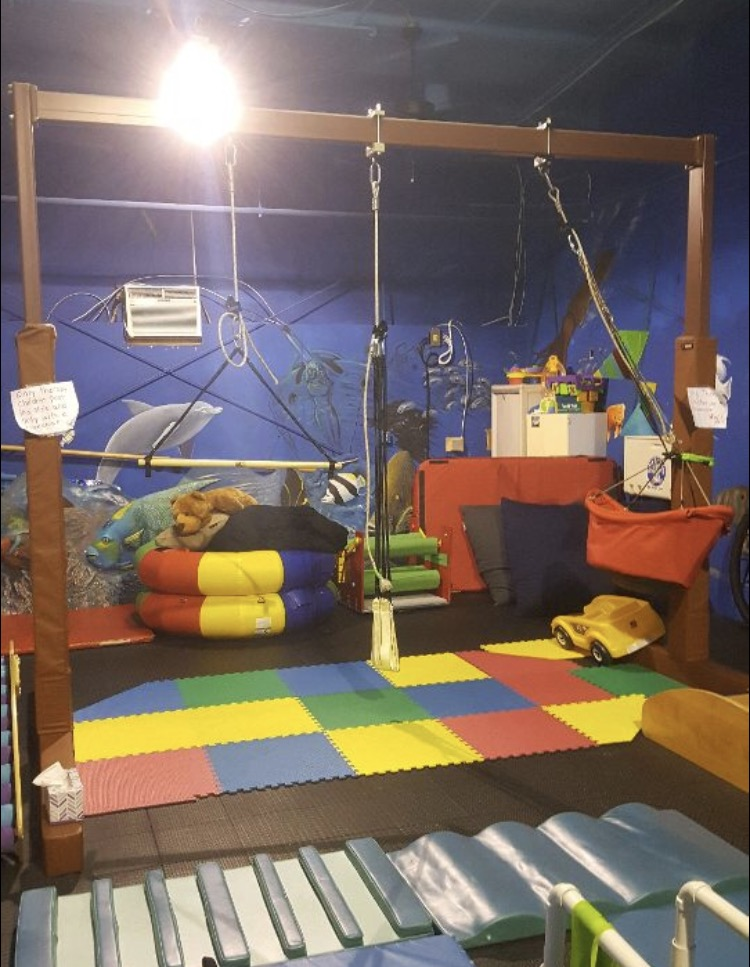

Climbing Wall
Contents |
Abstract
For this project, we need to construct a rock climbing wall that connects to a swing set system. The rock climbing wall will need to be able to hold elementary school children, but also be light weight and portable. Attached below is a picture of the swing set system in which this needs to be attached. It will be attached approximately 60 inches off the ground and cover the whole length of the swing set which is approximately 134 inches across. It will need to be sturdy when attached to this swing set system, but also lightweight so that when the other parts of the system need to be used, it can be taken down and moved to the side. 
Team members
- Photo of team
Team Members: Chandler Key, Jimmy Billings, Philip Shearry, Paul DiGiacomo, Inrique Harvey
Problem Statement/overview of the need
Project Statement: Need a rock climbing wall that attaches to an indoor swing set system. It needs to be portable and lightweight so that it can be moved around easily and not be a burden to those moving it. The rock climbing wall also needs to be sturdy enough so that elementary school children undergoing physical therapy can play on it and use it for long periods of time without it breaking under their weight.
Design Specifications
Needs to fit between a 134 inch width space and a 63 inch height space. This will be the same for all designs because the rock climbing wall must fill this entire space so that the kids can play on it and it be big enough. It also must be sturdy so that while these kids play on it they do not break it and injure themselves, but it must also be light so that those supervising them can move the rock climbing wall when they are done playing on it.
Background research
There are plenty of rock climbing walls out there today, and plenty that are on play sets out there today. The problem with these is the size and fact that they are slanted, which ours has a height restriction and will stand straight up instead of having a slant to it.
There is plenty of materials available to build this considering it will mainly consist of wood, steel, screws and clamps, all which are readily available and not terribly expensive.
Conceptual Design
Design Concept 1
Description: Steel Alloy frame, which is light but at the same time strong, that will be hinged to the poles 134 inches apart from each other. There will be two panels like this, fully symmetrical, that can be clamped and unclamped together on the back surface of the rock climbing wall, so that it can be easily taken down for storage and setup. The actual wall part will be made of wood which will be bolted into the metal so that it is sturdy enough to hold up to 70 pounds.
Design Concept 2
Same dimensioning as the conceptual design above the main difference being that the wooden wall part is split horizontally instead of vertically. The cons of this design are that there are more parts involved which would lead to a harder build and harder set up for those who own it. The pros of this design are that there is less mobility side to side which keep it in place.
Design Concept 3
Conceptual Design 3 is designed exactly like design one except that the mounts would detach from the climbing wall, not from the existing frame. This could make the setup easier and lighter but it could be a safety issue leaving the metals bars up.
Design Concept 4
Conceptual Design 4 is similar to the other designs, with just a few changes. Instead of pieces that come apart, it will be one big piece that has pulleys attached to the sides so that it can be raised up and latch in so the rest of the equipment can be used. This adds more simplicity to the design, but it could be hard for the women to raise the climbing wall so the rest can be used.
Evaluate concepts/select candidate
| Design # | 1 | 2 | 3 | 4 |
| Cost | 3 | 3 | 3 | 4 |
| Weight | 2 | 2 | 3 | 4 |
| Strength/Stability | 2 | 3 | 2 | 3 |
| Safety | 2 | 2 | 2 | 5 |
| Setup/Adjustability | 3 | 3 | 4 | 4 |
| Totals | 12 | 13 | 14 | 20 |
We used a scale from 1-5, with the lower the number being better, so overall design number 1 was the winner. While design number 2 was close, design 1 was cost efficient, low weight, sturdy, safe, and easy to setup and take down. The setup and take down is the most important part of the design because it can't be to heavy for the therapist who has to take down and put up the climbing wall.
Detailed Design
Detailed description of selected design
The selected design will be a small rock climbing wall made with wood and a light metal that is sturdy enough to support up to 70 pounds, but also light enough to be moved by the therapist. The rock climbing wall will split down the middle and while up will have several latches on the back that hold it together and make it sturdy. We chose design 1 because it will be the sturdiest for how light it will be, and it fits all the design specifications we need to complete the task.
Analysis
Describe three types of analysis to be performed on the design
Engineering analysis 1
The first engineering analysis we plan on doing is load analysis on the individual rock climbing rock and the bolt attached to it
Engineering analysis 2
The second engineering analysis we plan to perform is a load analysis of the hinges and steal frame pieces that are connected to the beams of the playground set already in place.
Engineering analysis 3
The third engineering analysis we plan on doing a load analysis of the bolts that are connected to the 90 degree steal beams which are the components of the rock wall
CAD Drawings
Bill of Materials
| Item | Quantity | Description | Source | Part Number | Price |
| Low Carbon Steel 90 degree Angle | 8 | 90 degree shaped steel beams | McMaster | 9017K124 | 11.57 eac |
| Lumber 2inX10inX | 4 | lumber used to hold rock climbing rocks | Lowes | 835852P02101654 | 16.78 eac |
| Rock Climbing Rocks Green | 1 | rocks attached to wood to climb | Lowes | 458803 | 20.48 |
| Rock Climbing Rocks Yellow | 1 | rocks attached to wood to climb | Lowes | 458803 | 20.28 |
| Rock Climbing Rocks Blue | 1 | rocks attached to wood to climb | Lowes | 458803 | 19.49 |
| Low Carbon Steel Square Tube | 1 | Small square steel bar that will attach to the already existing swing set | McMaster | 6527K154 | 8.79 |
| HD Hold Down Toggle Clamps | 2 | Clamp the steel bar beam to the swing set | McMaster | 5145A12 | 45.22 |
| Latch Style Toggle Clamp | 3 | latch the two separate rock climbing wall parts together | McMaster | 5071A54 | 20.10 |
| Hex Screws | 1 Package | a package of screws to put together the project | McMaster | 92314A106 | 7.69 |
| High Strength Steel Hex Nuts | 1 Package | a package of nuts to accompany the screws | McMaster | 94895A029 | 3.22 |
Total Cost= $$390.37
Assembly Instructions
Fabrication Process
Insert pictures of fabrication process
Testing and implementation
Describe testing, delivery, how used/received by the family
Photos of Completed design
Insert pictures of the final product
Instructions for safe use
Provide a clear summary of safe use for the family. Do not use the device unless supervised by an adult that has been fully understood the safe use of this product.